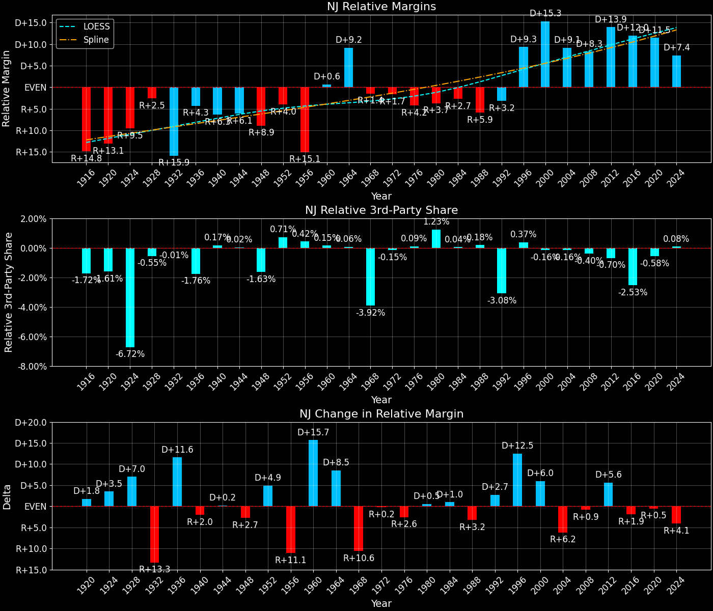

New Jersey (NJ) — Statewide

Margins · 3P share · Pres. deltas

Relative margins · Relative 3P · Rel. deltas
New Jersey (NJ) — Total Data
| Year | EVs | D | R | Margin | Rel. Margin | Nat. Margin | Margin Δ | Rel. Margin Δ | Nat. Margin Δ | Total votes |
|---|---|---|---|---|---|---|---|---|---|---|
| 1968 | 17 | 1,263,896(44.3%) | 1,325,130(46.5%) | R+2.1 | R+1.6 | R+0.6 | 2,851,191 | |||
| 1972 | 17 | 1,092,788(37.3%) | 1,835,319(62.7%) | R+25.4 | R+1.8 | R+23.5 | R+23.2 | R+0.3 | R+23.0 | 2,928,107 |
| 1976 | 17 | 1,444,793(48.9%) | 1,509,501(51.1%) | R+2.2 | R+4.4 | D+2.2 | D+23.2 | R+2.6 | D+25.7 | 2,954,294 |
| 1980 | 17 | 1,148,060(39.2%) | 1,547,201(52.8%) | R+13.6 | R+3.7 | R+9.9 | R+11.4 | D+0.7 | R+12.1 | 2,929,904 |
| 1984 | 16 | 1,260,798(39.5%) | 1,932,727(60.5%) | R+21.0 | R+2.9 | R+18.1 | R+7.4 | D+0.8 | R+8.2 | 3,193,525 |
| 1988 | 16 | 1,320,716(43.0%) | 1,743,175(56.8%) | R+13.8 | R+6.0 | R+7.7 | D+7.3 | R+3.1 | D+10.4 | 3,071,253 |
| 1992 | 15 | 1,436,206(43.3%) | 1,356,865(40.9%) | D+2.4 | R+3.2 | D+5.6 | D+16.1 | D+2.8 | D+13.3 | 3,314,900 |
| 1996 | 15 | 1,651,019(53.8%) | 1,102,577(35.9%) | D+17.9 | D+9.3 | D+8.6 | D+15.5 | D+12.5 | D+3.0 | 3,069,320 |
| 2000 | 15 | 1,775,484(56.2%) | 1,276,474(40.4%) | D+15.8 | D+15.3 | D+0.5 | R+2.1 | D+6.0 | R+8.0 | 3,158,828 |
| 2004 | 15 | 1,911,768(53.3%) | 1,670,107(46.6%) | D+6.7 | D+9.2 | R+2.5 | R+9.1 | R+6.1 | R+3.0 | 3,586,922 |
| 2008 | 15 | 2,215,422(57.3%) | 1,613,207(41.7%) | D+15.6 | D+8.3 | D+7.3 | D+8.8 | R+0.9 | D+9.7 | 3,868,254 |
| 2012 | 14 | 2,126,610(58.4%) | 1,478,750(40.6%) | D+17.8 | D+13.9 | D+3.9 | D+2.2 | D+5.6 | R+3.4 | 3,642,933 |
| 2016 | 14 | 2,145,231(55.0%) | 1,600,005(41.0%) | D+14.0 | D+11.9 | D+2.1 | R+3.8 | R+2.0 | R+1.8 | 3,901,543 |
| 2020 | 14 | 2,606,506(57.2%) | 1,881,067(41.3%) | D+15.9 | D+11.5 | D+4.4 | D+1.9 | R+0.4 | D+2.3 | 4,559,953 |
| 2024 | 14 | 2,220,713(52.0%) | 1,968,215(46.1%) | D+5.9 | D+7.5 | R+1.5 | R+10.0 | R+4.0 | R+6.0 | 4,272,725 |
Column explanations
- Year
- Election year.
- EVs
- Number of electoral votes allocated to this state or unit.
- D
- Number of votes for the Democratic candidate (raw count(pct%)).
- R
- Number of votes for the Republican candidate (raw count(pct%)).
- Margin
- Margin between the two major-party candidates, including third-party votes ((D - R)/total).
- Rel. Margin
- The presidential margin relative to the national presidential margin (Margin - Nat. Margin).
- Nat. Margin
- The national presidential margin for that year, including third-party votes ((D_total - R_total)/total_votes).
- Δ
- Change (delta) in the value from the previous election year. Blank if no data for previous year.
- Total votes
- Total voter turnout or ballots cast (when provided).
New Jersey (NJ) — Third-Party Data
| Year | Other votes | 3rd Party Share | 3rd Party Nat. Share | 3rd Party Rel. Share |
|---|---|---|---|---|
| 1968 | 262,165(9.2%) | T+9.2 | T+13.6 | T-4.4 |
| 1972 | 0(0.0%) | T+0.1 | T-0.1 | |
| 1976 | 0(0.0%) | T+0.3 | T-0.3 | |
| 1980 | 234,643(8.0%) | T+8.0 | T+7.0 | T+1.0 |
| 1984 | 0(0.0%) | T+0.1 | T-0.1 | |
| 1988 | 7,362(0.2%) | T+0.2 | T+0.2 | T+0.0 |
| 1992 | 521,829(15.7%) | T+15.7 | T+19.2 | T-3.5 |
| 1996 | 315,724(10.3%) | T+10.3 | T+9.7 | T+0.6 |
| 2000 | 106,870(3.4%) | T+3.4 | T+3.7 | T-0.3 |
| 2004 | 5,047(0.1%) | T+0.1 | T+0.8 | T-0.7 |
| 2008 | 39,625(1.0%) | T+1.0 | T+1.4 | T-0.4 |
| 2012 | 37,573(1.0%) | T+1.0 | T+1.6 | T-0.6 |
| 2016 | 156,307(4.0%) | T+4.0 | T+5.5 | T-1.5 |
| 2020 | 72,380(1.6%) | T+1.6 | T+1.8 | T-0.3 |
| 2024 | 83,797(2.0%) | T+2.0 | T+1.9 | T+0.1 |
Column explanations
- Year
- Election year.
- Other votes
- Number of votes for third-party (other) candidates (raw count(pct%)).
- 3rd Party Share
- Share of the vote received by third-party (other) candidates.
- 3rd Party Nat. Share
- The national third-party share for that year (3P votes / total votes).
- 3rd Party Rel. Share
- Third-party share relative to the national third-party share (3P share - Nat. 3P share).

Two-party margins · relative · deltas
New Jersey (NJ) — Two-Party Data
| Year | 2-Party Margin | 2-Party Nat. Margin | 2-Party Rel. Margin | 2-Party Margin Δ | 2-Party Nat. Margin Δ | 2-Party Rel. Margin Δ |
|---|---|---|---|---|---|---|
| 1968 | R+2.4 | R+0.7 | R+1.7 | |||
| 1972 | R+25.4 | R+23.6 | R+1.8 | R+23.0 | R+22.9 | R+0.1 |
| 1976 | R+2.2 | D+2.2 | R+4.4 | D+23.2 | D+25.8 | R+2.6 |
| 1980 | R+14.8 | R+10.6 | R+4.2 | R+12.6 | R+12.8 | D+0.2 |
| 1984 | R+21.0 | R+18.1 | R+2.9 | R+6.2 | R+7.5 | D+1.3 |
| 1988 | R+13.8 | R+7.8 | R+6.0 | D+7.3 | D+10.4 | R+3.1 |
| 1992 | D+2.8 | D+6.9 | R+4.1 | D+16.6 | D+14.7 | D+2.0 |
| 1996 | D+19.9 | D+9.5 | D+10.4 | D+17.1 | D+2.6 | D+14.5 |
| 2000 | D+16.4 | D+0.5 | D+15.8 | R+3.6 | R+8.9 | D+5.4 |
| 2004 | D+6.7 | R+2.5 | D+9.2 | R+9.6 | R+3.0 | R+6.6 |
| 2008 | D+15.7 | D+7.4 | D+8.4 | D+9.0 | D+9.8 | R+0.9 |
| 2012 | D+18.0 | D+3.9 | D+14.0 | D+2.2 | R+3.4 | D+5.7 |
| 2016 | D+14.6 | D+2.2 | D+12.3 | R+3.4 | R+1.7 | R+1.7 |
| 2020 | D+16.2 | D+4.5 | D+11.6 | D+1.6 | D+2.3 | R+0.7 |
| 2024 | D+6.0 | R+1.6 | D+7.6 | R+10.1 | R+6.1 | R+4.0 |
Column explanations
- Year
- Election year.
- 2-Party Margin
- Margin between the two major-party candidates, ignoring third-party votes ((D - R)/(D + R)).
- 2-Party Nat. Margin
- The national presidential margin for that year, including third-party votes ((D_total - R_total)/total_votes).
- 2-Party Rel. Margin
- The presidential margin relative to the national presidential margin (Margin - Nat. Margin).
- Δ
- Change (delta) in the value from the previous election year. Blank if no data for previous year.